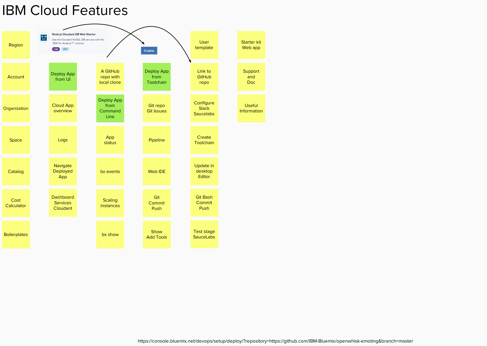
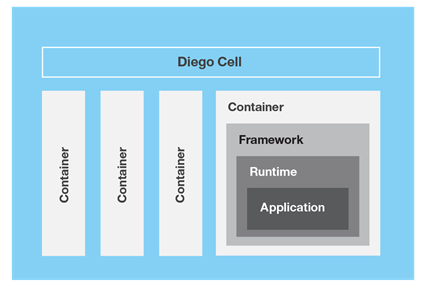

Version: 1 - from GitHub
|
IBM Cloud Platform as a Service (PaaS) is built on Cloud Foundry. Cloud Foundry is an open-source project lead by the Cloud Foundry Foundation.
|
The Router routes incoming traffic to the appropriate component in the environment. For example, the Router sends traffic to the Cloud Controller for management of applications in their lifecycle or a hosted application on a Diego Cell. The Router is informed of active application instances through the router-emitter that monitors status in the Diego Bulletin Board Service (BBS). The Diego Cell hosts application instances, reports application status to the Diego Bulletin Board Service (BBS), and provides application logs, errors, and metrics to the Loggregator. Application instances live inside Garden containers. Containerization ensures that application instances run in isolation, get their fair share of resources, and are protected from noisy neighbors.  The Service broker advertises a catalog of service offerings and service plans to Bluemix and Cloud Foundry, and receives calls from Cloud Foundry for four functions: create, delete, bind, and unbind. The broker then passes these calls to the service itself. |